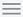
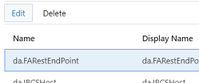
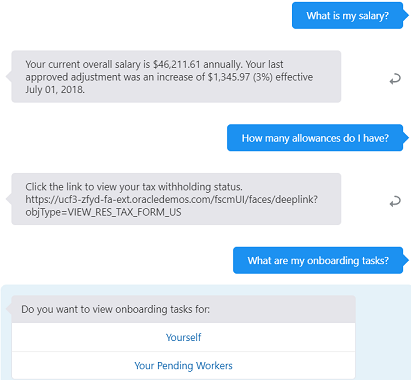

Oracle OpenWorld 2019 Hands-On Lab - Creating a Digital Assistant for Oracle HCM Cloud
In this lab, you'll learn how to set up and use a digital assistant with Oracle HCM Cloud.
Oracle HCM Cloud is Oracle's cloud-based human capital management solution, which gives your entire enterprise the power of HRMS through Oracle's Global Human Resources, Talent Management, and Social solutions.
A skill is an individual chatbot that is focused on a specific set of capabilities, such as tracking inventory, submitting time cards, and creating expense reports. In this lab, we'll work with a skill that was created for Oracle HCM Cloud.
A digital assistant is a master chatbot containing one or more specialized skills. When a user engages with the digital assistant, the digital assistant evaluates the user input and routes the conversation to the appropriate skill. You can populate your digital assistant with skills from the Skill Store and with skills you have designed yourself. We'll be adding an HCM skill to a digital assistant.
Here’s the scenario for this lab:
You’re part of a project team at the fictitious BigCorp and are planning to provide a digital assistant to allow employees to perform HR-related inquiries and operations via a digital assistant. You'll be using a skill provided by HCM but will make a few customizations to it that are specific to BigCorp.
In addition, you would like to investigate the performance of your digital assistant, which Oracle Digital Assistant's Insights feature can help you with.
Here is what you need to do:
Configure the HCM skill that we have provided so that it can access the HCM instance.
Test the skill.
Associate the skill with a digital assistant.
Test the digital assistant.
Investigate the skill using Insights.
Before You Begin
What Do You Need?
To complete this lab, you need:
An Oracle Digital Assistant (ODA) cloud instance. You will be using the shared instance that has been provided for this event.
The HCM skill (OOW 2019 HOL HCM).
A starter digital assistant.
An HCM Cloud instance. You will be using the shared instance that has been provided for this event.
Log In to the Shared ODA Instance
Let's get started by logging into Oracle Digital Assistant
Log in to the instance using the credentials provided by your lab instructor.
After successfully logging in, you will land on the ODA home page.
Set Up the HCM Skill
In this section of the lab, we'll set up the HCM Skill, which is a "factory-made" skill for accessing HCM Cloud features.
Clone the Starter Skill
Since multiple people will be doing this lab at once, you'll need to clone the HCM skill so that you have your own copy to work with.
With the Oracle Digital Assistant UI open in your browser, click  to open the side menu.
Click Development and select Skills to open the Skills dashboard.
Click again to collapse the side menu.
In the Filter field above the New Skill tile, type HOL HCM to quickly locate the starter skill (OOW 2019 HOL HCM).
In the tile for the OOW 2019 HOL HCM skill, click the Options menu () and select Clone.
In the Create Clone dialog, enter a value for Display Name using the form <your_initials>_HCM.
For example, if your initials are AB, you'd name the skill AB_HCM.
Click Clone.
On the Skills dashboard page, select <your_initials>_HCM to open it up in the designer.
Connect the Skill to the HCM Instance
Now we need to connect the skill to an HCM instance so that the skill can return data based on the user requests.
For purposes of this lab, we're also going to add a user name and password to the configuration. This will enable us to test from within the Oracle Digital Assistant tester without the need to keep logging on. We'll access the skill with the username AMANDA AVERY.
In the left navigation of the skill, select and then select the Configuration tab.
Scroll down to the Custom Parameters section of the page.
Select the entry for da.FARestEndPoint and click Edit.

In the Value field of the Edit Parameter dialog, enter https://ucf3-zfyd-fa-ext.oracledemos.com and click OK.
Select the entry for da.Password and click Edit.
In the Value field of the Edit Parameter dialog, enter IBW39957 and click OK.
Select the entry for da.Username and click Edit.
Set the value as AMANDA.AVERY and click OK.
Turn on Insights and Conversation Logging
Since we'll later be using the Insights feature to evaluate skill usage and performance, you'll need to turn on the Insights feature.
Select the General tab and enable all logging and enable Insights and all three switches for Conversation Logging.
Train the Skill
Before you can publish a skill and use it in a digital assistant, you need to train it.
Click , click Submit, and then wait for the training to complete.
This might take a few minutes. You'll be informed when the training completes with a popup message like the following:
If you miss that message, you can confirm if the training has been finished if the Train button has a checkmark next to it ().
Test the Features of the HCM Skill
The HCM skill is designed to address employment-related questions and help you initiate manager self-service transactions. The skill is broken down multiple intents, which are classifications of what users may want to do, such as check their vacation balance. The HCM skill has intents for the following activities:
Absence Balances
Past & Future Scheduled Absences
Anytime Feedback
Benefits Coverage
Directory
Salary
Tax Withholding & Year-End Documents
Payslip
Onboarding
Manager Self-Service
Team Performance Evaluations & Goals
To see these features in action, we'll use ODA's built-in skill tester.
Find the Skill Tester icon () in the bottom of the skill's left navigation bar and click it.
In the tester's Message field, type who am I, and press Enter.
You should see the following response:
Now try the following requests:
Show me my scheduled absences
What is my medical group number?
Who is my HR rep?
What is my salary?
How many allowances do I have?
What are my onboarding tasks?
For each of these, you should get an appropriate response, like those shown in the following two images.

Enhance an Existing Intent
One of the HCM skill's functions is to log feedback. We'd like to enhance this ability so that it can handle nominations to the "Leadership Circle" group, which is an honor specific to our fictitious company.
In the tester, click Reset.
Enter I'd like to nominate @larry swanson for leadership circle.
This is what you should see:
The skill doesn't understand this request. So let's dig down into the intent for feedback and see if there's anything we can do about it.
Close the tester.
In the left navigation for the designer, select .
Select the AnytimeFeedback intent.
Find the Examples section of the page.
The examples here are example utterances that are used to train to the skill to understand when a user wants to provide feedback.
Let's see if any of these utterances include "leadership circle".
In the Filter field, type leadership circle, and press Enter.
As you can see, none of the examples contain "leadership circle".
So let's add some examples that do.
In the Enter your example utterances here field (below the Filter field), enter I'd like to nominate @larry swanson for leadership circle and press Enter.
Repeat the previous step using the following phrases:
make a nomination for leadership circle
add John Smith to Leadership Circle
is it possible to add someone to leadership circle?
Retrain and Retest the Skill
To see if these enhancements work, we need to retrain the skill and then test it again.
Click , and click Submit, and then wait for the training to complete.
Click the tester icon ().
In the tester, click Reset.
In the Message field, enter I'd like to nominate @mitch blum for leadership circle.
This is what you should see:
The additional utterances in the training model have improved the accuracy of the skill's response.
In the Skills dashboard, find the tile for your skill.
If you don't quickly spot your copy of the skill, type your initials into the Filter field located above the New Skill tile to narrow down the list of skills shown.
Click the skill's Options menu () and select Publish.
On the Publish Skills page, click Publish.
Once you have published the skill, note the icon on the skill's tile that shows it is now read-only.
Create a Digital Assistant
Now we'll create a digital assistant and add the HCM skill to it. A digital assistant works as a master bot that contains one or more skills. A digital assistant:
Greets the user upon access.
Upon user request, lists what it can do and provides entry points into the given skills.
Routes explicit user requests to the appropriate skill.
Handles interruptions to flows.
Handles disambiguation.
Handles requests to exit.
Clone the Starter Digital Assistant
As a starting point, we'll clone an existing digital assistant.
Click to open the side menu.
Click Development and select Digital Assistants.
Click again to collapse the side menu.
In the Filter field above the New Digital Assistant tile, type FADig to quickly locate the FADigitalAssistant digital assistant.
In the tile for FADigitalAssistant, open its Options menu (), and select Clone.
In the Create Clone dialog, enter a value for Display Name using the form <your_initials>_FA_DA.
For example, if your initials are AB, you'd name the skill AB_FA_DA.
Click Clone.
On the Digital Assistants dashboard page, select <your_initials>_FA_DA to open it up in the designer.
Add the HCM Skill to the Digital Assistant
Now you'll add your copy of the HCM skill to your copy of the digital assistant.
In your DA, select .
Click .
Find the tile for your copy of the HCM skill.
Note: The skill won't appear there if you haven't completed the Publish the Skill part of the lab.
In the tile for your skill, click .
Click Close to close the Skill Catalog.
Click , click Submit, and wait for the training to complete.
Personalize the Digital Assistant
Once you have created a digital assistant and added skills to it, you can customize some of the aspects of the digital assistant, such as the invocation name of the digital assistant’s skills and the utterances that are used to automatically construct a menu for the skill in the digital assistant.
Change the Invocation Name
An important part of configuring any skill is coming up with a good invocation name, which is used when the user explicitly invokes the skill. Here are the steps to change the invocation name of recently added skill:
In your DA, select .
Select your copy of the HCM skill.
Scroll down to the Interaction Model section of the page and change the value of the Invocation Name field to BigCorp HR.
Add Example Utterances for Invoking the Skill
Now we'll add a few example utterances. These will be used as menu items when for the skill when you first open the digital assistant.
Select the existing example utterance and change its value to Onboarding tasks.
In the Example Utterances field, enter My salary and press Enter.
In the Example Utterances field, enter Scheduled absences and press Enter.
When you're done this, is what the Interaction Model section of the page should look like.
Explore the Digital Assistant's System Intents
Digital assistants come with three system intents:
exit, which applies when the user signals the desire to exit the current conversation or context in the digital assistant.
help, which applies when the user asks for help or orientation.
unresolvedIntent, which applies to user input that doesn't match well with the exit and help intents. It improves classification of the exit and help intents
To explore these intents and their example utterances:
In the digital assistant, select .
Converse with the Digital Assistant
Now let’s have a conversation with the digital assistant and see how it responds to various types of input:
Click the tester icon ().
In the tester's Message field, type hello, press Enter, and note the DA's response.
You'll notice that the menu items in the response correspond with the example utterances you entered earlier.
Click the My salary option.
It should return Amanda Avery's salary information.
Now, instead of clicking one of the menu options, typeWhat is my medical group number?.
In the response, you learn that Amanda is not enrolled in any plans.
Now enter what else can you do?.
This phrase is recognized as a request for help.
Click Onboarding tasks.
You are given options for displaying processes for yourself or pending workers.
Instead of selecting one of those options, type wait, what are my scheduled absences?
The digital assistant is able to accommodate the interruption in flow, answer your question about scheduled absences, and return to the previous flow.
Click Yes to continue with information on onboarding and then click Yourself.
Now enter I'd like to give kudos to @Mitch Blum.
When prompted to enter feedback, type He's great!.
When prompted for who can see the feedback, enter forget it.
The skill clearly is trained well enough to exit the flow.
Investigate HCM Skill Performance Using Insights
In this section, we'll learn about the Insights feature, which helps you identify general usage patterns and get to the bottom of any issues with your skills.
Basic Conversation Insights
You are now going to use Insights to understand how the user interacted with the skill. By doing so, you can learn things such as:
How much each feature of the skill is being accessed.
Paths that users tend to follow through the conversations.
The percentage of conversations that complete successfully.
Any trouble spots in conversations.
To access Insights:
In Oracle Digital Assistant, click Development and select Skills.
In the Filter field located above the New Skill tile, enter your initials to quickly locate your copy of the HCM skill.
Click your copy of the skill to open it.
In the left navbar of the skill designer, click Insights ().
In the Conversations tile, you should see that there have been several conversations logged.
Click the Conversations tab and notice the completed conversations.
Click View Conversation to view detailed conversations.
Click Close to return to the Conversations tab
Export Insights Data
Select the Export tab and click the Export button.
Provide a name and select a date range, as shown below, and click Export.
The export of insight data begins.
Click the Refresh button to monitor the status.
Once the status changes from In progress to Completed, click the Complete icon to download the insights data in a zip file.
 Oracle OpenWorld 2019 Hands-On Lab - Creating a Digital Assistant for Oracle HCM Cloud
Oracle OpenWorld 2019 Hands-On Lab - Creating a Digital Assistant for Oracle HCM Cloud Before You Begin
Before You Begin Log In to the Shared ODA Instance
Log In to the Shared ODA Instance Set Up the HCM Skill
Set Up the HCM Skill , click Submit, and then wait for the training to complete.
, click Submit, and then wait for the training to complete.
 ) in the bottom of the skill's left navigation bar and click it.
) in the bottom of the skill's left navigation bar and click it.
 Create a Digital Assistant
Create a Digital Assistant .
. Investigate HCM Skill Performance Using Insights
Investigate HCM Skill Performance Using Insights ).
).